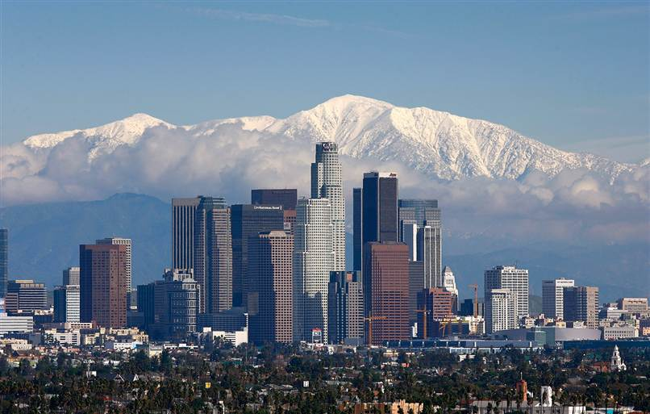

Меню
Финикс

Финикс (также Феникс; англ. Phoenix) — столица и крупнейший город американского штата Аризона.Основан как город Финикс 25 февраля 1881 года на развалинах индейского города. Название ассоциируется с именем птицы Феникс.
Население города на 2012 год составляло 1 488 750 человек (6-й по величине город США). Финикс также является крупнейшей столицей штата из всех американских столиц, включая федеральную столицу Вашингтон.
Copyright © 2014. Все права защищены.